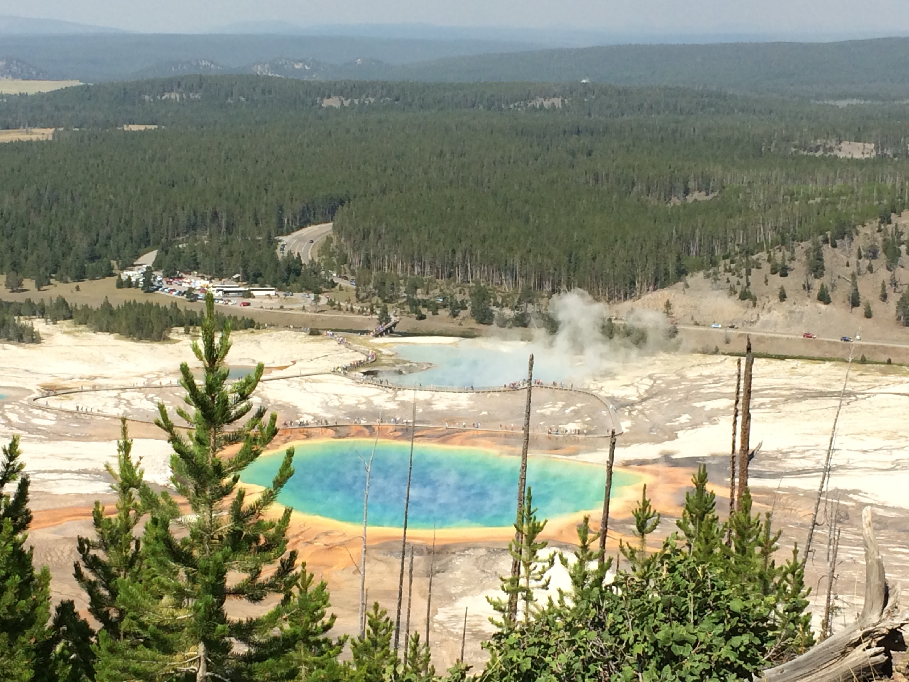

Yellowstone Suggestions
Yellowstone National Park is an incredible place, and I firmly advocate exploring every nook and cranny of the park. It definitely catches a lot of flac on account of the hordes of tourists that visit the park during the peak summer season, but it is not over-rated. It's the wilderness equivalent of Disneyland, complete with spectacular shows, both scheduled (Old Faithful Geyser) and impromptu (most every other geyser).
- Grand Prismatic Spring
- Old Faithful
- Dragon's Mouth Spring
- Morning Glory Pool
- Grand Canyon of the Yellowstone
- Roosevelt Arch
- Hayden Valley
- Lamar Valley
- Bison
- Black Bear
- Grizzly Bear
- Elk
- Mule-tailed Deer
- White-tailed Deer
- Moose
- Wolves
- INSERT
- INSERT
- Crazy Creek Campground
Geothermal Features:
Sights:
Located at the northeast entrace of Yellowstone National Park, along with a good nearby hole-in-the-wall restaurant.
Wildlife Viewing:
Wildlife to see:
Some wildlife are rarer than others, but all are present within the park. Usually determination and patience pay off and you will likely manage to see what you came to see if you look long and hard enough.
Talk to your park rangers, as they are the most in the know when it comes to the locations of the animals within the park. Visit the visitor's center and talk to the rangers stationed there. Ones stationed by the entrance gates often do not have access to this information and are tasked with keeping track of camping spot availiability at the various campgrounds.
Hikes:
Camping:
I highly recommend camping outside of the park. Rangers at the visitor's center and park campgrounds will have a printed list of the nearby national forest campgrounds and their proximity from each park exit. These campgrounds are much less crowded than the ones in the park and considerably less expensive. Space is at a premium within the park, so if you camp there expect to be in very close proximity to your neighbors. Campsites outside of the park are much more spacious and scenic.
This is one of my all-time personal favorites. Make sure to choose a spot with a view of the creek (most people don't and many come and go never even aware of its existance). In warmer months there's a waterfall across the street.
Caveat
Montana is my favorite state.
Home | Big Sky Recommendations | Nearby Recommendations
© 2015 Morgan Owens, All Rights Reserved.This page borrows heavily from the Jekyll Architect theme by Jason Long.